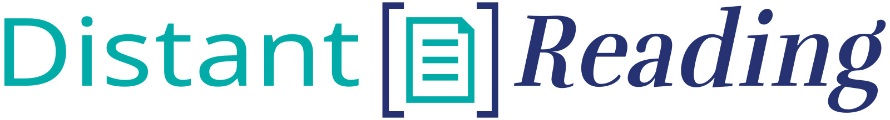
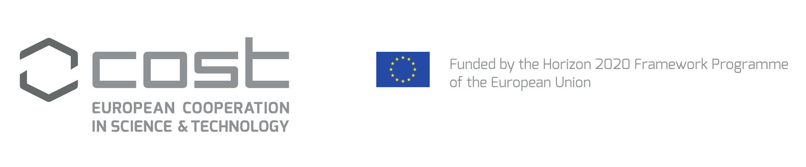
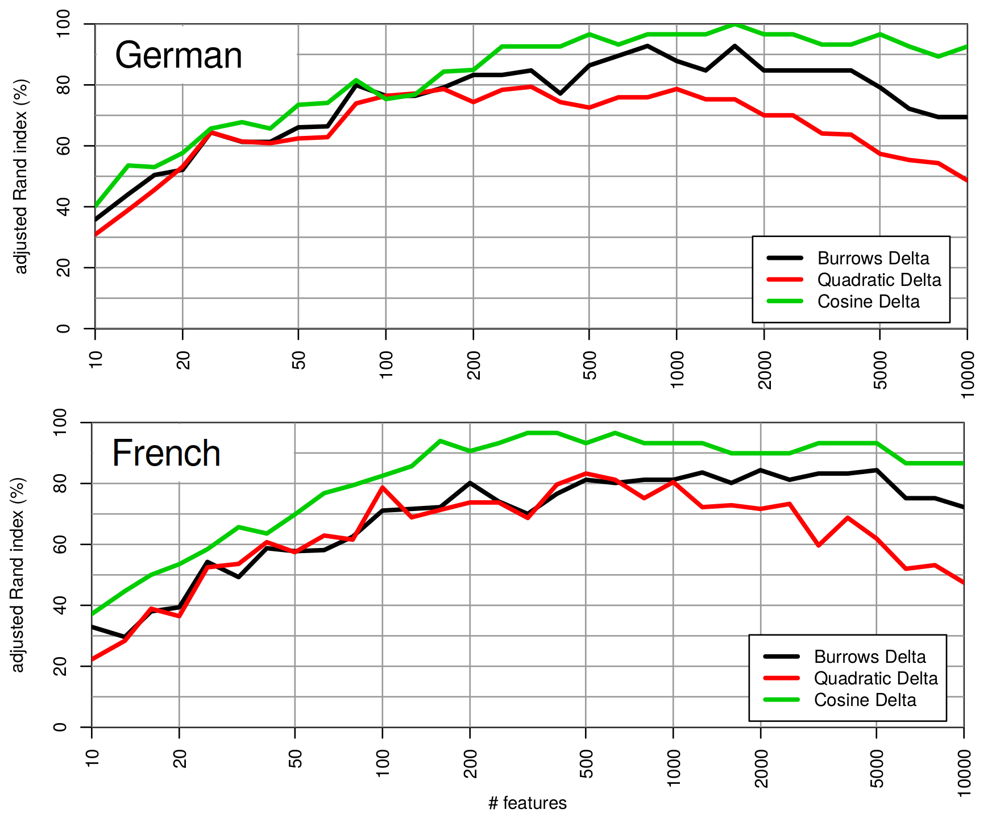
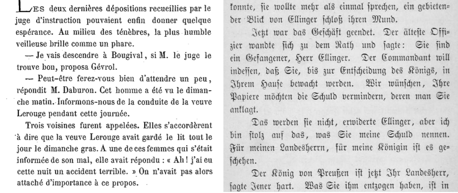

<!doctype html>
<html lang="en">
<head>
<meta charset="utf-8">
<!-- CUSTOMIZE THIS! -->
<title>CA16204</title>
<meta name="author" content="Christof Schöch">
<!-- END -->
<meta name="description" content="Slides">
<meta name="apple-mobile-web-app-capable" content="yes">
<meta name="apple-mobile-web-app-status-bar-style" content="black-translucent">
<meta name="viewport" content="width=device-width, initial-scale=1.0, maximum-scale=1.0, user-scalable=no, minimal-ui">
<link rel="stylesheet" href="css/reveal.css">
<link rel="stylesheet" href="css/theme/simple.css" id="theme">
<!-- Code syntax highlighting -->
<link rel="stylesheet" href="lib/css/zenburn.css">
<!-- Printing and PDF exports -->
<script>
var link = document.createElement( 'link' );
link.rel = 'stylesheet';
link.type = 'text/css';
link.href = window.location.search.match( /print-pdf/gi ) ? 'css/print/pdf.css' : 'css/print/paper.css';
document.getElementsByTagName( 'head' )[0].appendChild( link );
</script>
<!--[if lt IE 9]>
<script src="lib/js/html5shiv.js"></script>
<![endif]-->
</head>

<body>
<div class="reveal">
<div class="slides">
<section data-markdown="" data-separator="^\n---\n" data-separator-vertical="^\n--\n" data-charset="utf-8" data-background-image="img/basics/distantreading_rgb_tuerkis-blau_icon-transparent.png" data-background-size="100px" data-background-position="right 10px top 10px">
<script type="text/template">

<!-- THIS IS WHERE THE CONTENT GOES! -->
<!-- Any section element inside of this container is displayed as a slide -->

##Distant Reading for European Literary History. A COST Action
</img>
<hr/>
<br/>Christof Schöch (Trier, Germany)
<br/>Vilnius Lectures, Sept. 2020
<hr/>
<br/>website: http://www.distant-reading.net
<br/>slides: https://dh-trier.github.io/talks
<br/>
<hr/>
<a href="http://www.cost.eu"></img></a>


---
# Overview
1. [What are COST Actions?](#/2)
2. [What is DISTANT READING about?](#/3)
3. [Text Collection Building](#/4)
4. [Methods and Tools](#/5)
5. [Literary History and Theory](#/6)
6. [Conclusions](#/7)


---
# 1. What are COST Actions?

--
## Networking Grants
* Support network and capacity building around specific research topics <!-- .element: class="fragment" data-fragment-index="1" -->
* Networks of European countries and international partners <!-- .element: class="fragment" data-fragment-index="2" -->
* Around 300 Actions are running in parallel (very few of them in the Humanities) <!-- .element: class="fragment" data-fragment-index="3" -->

--
## Some Actions relevant to DH
* [Interedition](http://www.interedition.eu/), 2008-2012
* [European Network of e-Lexicography](https://www.elexicography.eu/), 2013-2017 
* [Reassembling the Republic of Letters](http://www.republicofletters.net/), 2015-2018
* [NEP4DISSENT - Cultures of Dissent](https://nep4dissent.eu/), 2017-2021
* [Nexus Linguarum](https://nexuslinguarum.eu/), 2019-2023


--
## Some key features
* Action duration is usually 4 years <!-- .element: class="fragment" data-fragment-index="1" -->
* Structured into working groups <!-- .element: class="fragment" data-fragment-index="2" -->
* No funding for staff, only for networking activities <!-- .element: class="fragment" data-fragment-index="3" -->
* Various forms of "networking activities" <!-- .element: class="fragment" data-fragment-index="4" -->


--
## COST networking activities
* Working Group Meetings <!-- .element: class="fragment" data-fragment-index="1" -->
* Training Schools <!-- .element: class="fragment" data-fragment-index="2" -->
* Short Term Scientific Missions <!-- .element: class="fragment" data-fragment-index="3" -->
* Conference Grants <!-- .element: class="fragment" data-fragment-index="4" -->


---
# 2. What is *Distant Reading for European Literary History* about?

--
## Research objectives
* Resources: Build a multilingual reference collection of European novels ("ELTeC") <!-- .element: class="fragment" data-fragment-index="1" -->
* Methods: Explore, evaluate, adapt and share computational methods of text analysis for ELTeC <!-- .element: class="fragment" data-fragment-index="2" -->
* Theory: Think through consequences of digital data and methods for literary history and theory  <!-- .element: class="fragment" data-fragment-index="3" -->

--
## Networking objectives
* Bring together corpus linguists, computational linguists, digital literary scholars, literary historians and theorists <!-- .element: class="fragment" data-fragment-index="1" -->
* Spread and share competencies in the three areas above among these groups <!-- .element: class="fragment" data-fragment-index="2" -->
* Support relevant collaborative grant proposals on the national and European levels <!-- .element: class="fragment" data-fragment-index="3" -->

--
## Current Network
* 32 countries are involved 
* more than 200 scholars are participating


---
# 3. Text Collection Building

--
## European Literary Text Collection (ELTeC)
* Comparable sets of novels for at least 10 European languages
* Each set: 100 novels published between 1850 and 1920
* Extensions (chronologically or simply additional texts)
* WG leads: Carolin Odebrecht (DE), Lou Burnard (UK), Borja Navarro Colorado (SP), Martina Scholger (AT)
* Currently: about 1050 novels published
* More information: https://distantreading.github.io/ELTeC/

--
## Collection building: text selection
* (1) Eligibility: In order to be included, a text must...
    * have been first published as a book between 1850 and 1919 <!-- .element: class="fragment" data-fragment-index="1" -->
    * have been published in a European country within a decade from their first publication <!-- .element: class="fragment" data-fragment-index="2" -->
    * be a novel, i.e. a fictional prose narrative of a minimum length of 10,000 words <!-- .element: class="fragment" data-fragment-index="3" -->
    * have originally been written in the language of the given subcollection <!-- .element: class="fragment" data-fragment-index="4" -->

--
## Collection building: text selection
* (2) Composition: Among the novels in each language subcollection...
    * at least 10% (ideally more) have been written by female authors  <!-- .element: class="fragment" data-fragment-index="1" -->
    * at least 30% are rarely reprinted novels <!-- .element: class="fragment" data-fragment-index="2" -->
    * at least 20% are short (10-50k words), at least 20% are long (>100k words) novels <!-- .element: class="fragment" data-fragment-index="3" -->
    * 9-11 authors are represented with three novels <!-- .element: class="fragment" data-fragment-index="4" -->
    * the novels should be spread out evenly across the entire period <!-- .element: class="fragment" data-fragment-index="5" -->


--
## Collection building: Text encoding
* All texts are encoded in XML-TEI (Text Encoding Initiative) <!-- .element: class="fragment" data-fragment-index="1" -->
* There are three levels of encoding, with increasingly detailed markup <!-- .element: class="fragment" data-fragment-index="2" -->
    * level 0: very simple / minimal markup
    * level 1: richer, more 'semantic' markup
    * level 2: text with linguistic annotation

--
## Some challenges 
* Different states of digitization in various formats (e.g.: French vs. Romanian) <!-- .element: class="fragment" data-fragment-index="1" -->
* Most metadata relevant to composition is not included in catalogs; e.g. novel type, author gender <!-- .element: class="fragment" data-fragment-index="2" -->
* Varying writing systems used (e.g.: Romanian 'transition alphabet') <!-- .element: class="fragment" data-fragment-index="3" -->
* Varying traditions of novel length (e.g.: few Slovenian 'long' novels) <!-- .element: class="fragment" data-fragment-index="4" -->
* corpus composition criteria as a double-edged sword (under-represented categories in under-represented literary traditions) <!-- .element: class="fragment" data-fragment-index="5" -->
* need for stability vs. adjustment of composition and encoding guidelines <!-- .element: class="fragment" data-fragment-index="6" -->


---
# Methods and Tools


--
## Objectives
<br/>
* Adapt Distant Reading methods to multiple European languages <!-- .element: class="fragment" data-fragment-index="1" -->
* Develop cross-linguistic use of Distant Reading methods <!-- .element: class="fragment" data-fragment-index="2" -->
* Spread Distant Reading competencies across Europe (ECI / ITC) <!-- .element: class="fragment" data-fragment-index="3" -->
* WG leads: Joanna Byszuk (PL), George Mikros (GR), Fotis Jannidis (DE), Yaakov HaCohen-Kerner (ISR) <!-- .element: class="fragment" data-fragment-index="4" -->

--
## Example for Adaptation: Stylometry
</img>


--
## Cross-Language Distant Reading:<br/>Direct Speech
</img>


---
# Literary History and Theory

--
## Objectives
<br/>
* Think through consequences for literary history and theory <!-- .element: class="fragment" data-fragment-index="1" -->
* Key concepts: style, genre, authorship, periodization, canonization, intertextuality, etc. <!-- .element: class="fragment" data-fragment-index="2" -->
<br/><br/>
* WG lead: Antonija Primorac <!-- .element: class="fragment" data-fragment-index="3" -->
* Co-leads: Rosario Arias, Corina Moldovan <!-- .element: class="fragment" data-fragment-index="3" -->


---
# To learn more
<br/>
* To learn more
    * http://distant-reading.net/
    * https://github.com/distantreading
    * http://www.cost.eu/COST_Actions/ca/CA16204
    * https://twitter.com/DistantReading
* These slides: 
    * http://distantreading.github.io/slides-en 


--
<br/>
<br/>
<br/>
## Danke! · Thank you! · Merci!
<br/>
<br/>
<br/>
<br/>
<br/>
<br/>
<br/>
<hr/>
<p><a href="https://creativecommons.org/licenses/by/4.0/">CC-BY 4.0</a><br/></p>
<hr/>
<br/>
<br/>
</script>
</section>


<!-- DON'T TOUCH UNLESS YOU KNOW WHAT YOU'RE DOING :-) -->
</div>
<script src="lib/js/head.min.js"></script>
<script src="js/reveal.js"></script>
<script>
// Full list of configuration options available at:
// https://github.com/hakimel/reveal.js#configuration
Reveal.initialize({
    controls: true,
    progress: true,
    history: true,
    center: true,
    transition: 'slide', // none/fade/slide/convex/concave/zoom
    // Optional reveal.js plugins
    dependencies: [
        { src: 'lib/js/classList.js', condition: function() { return !document.body.classList; } },
        { src: 'plugin/markdown/marked.js', condition: function() { return !!document.querySelector( '[data-markdown]' ); } },
        { src: 'plugin/markdown/markdown.js', condition: function() { return !!document.querySelector( '[data-markdown]' ); } },
        { src: 'plugin/highlight/highlight.js', async: true, callback: function() { hljs.initHighlightingOnLoad(); } },
        { src: 'plugin/zoom-js/zoom.js', async: true },
        { src: 'plugin/notes/notes.js', async: true }
        ]
    });
</script>
</body>
</html>
